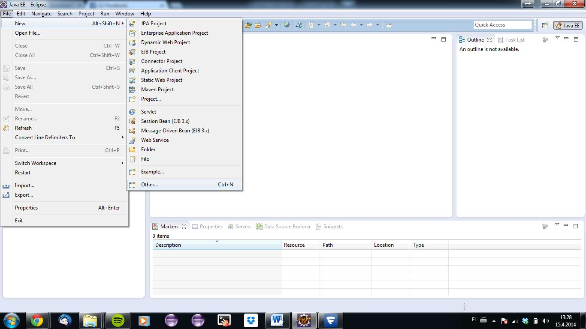
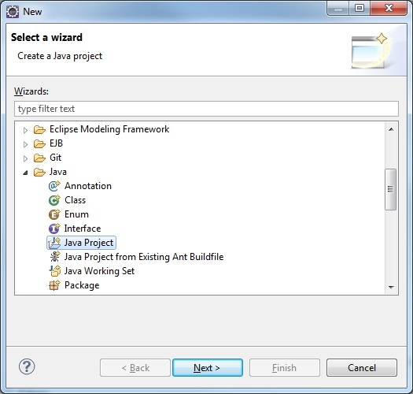
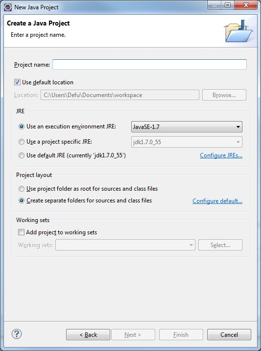
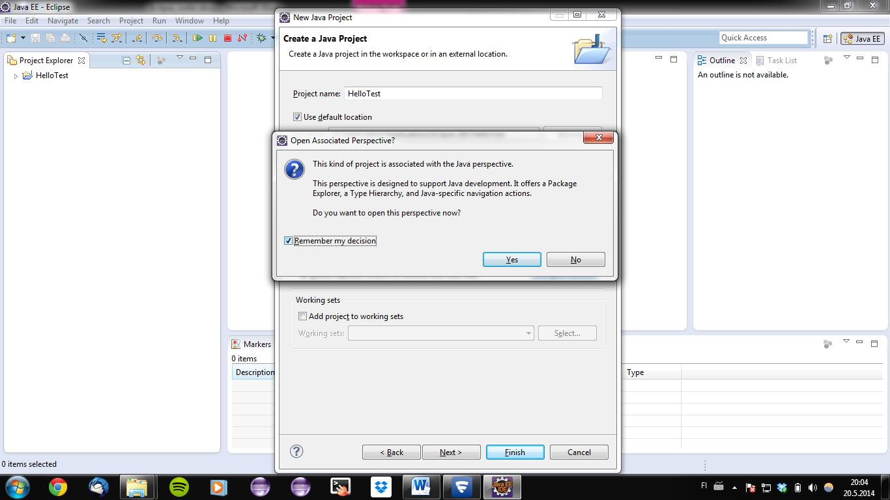
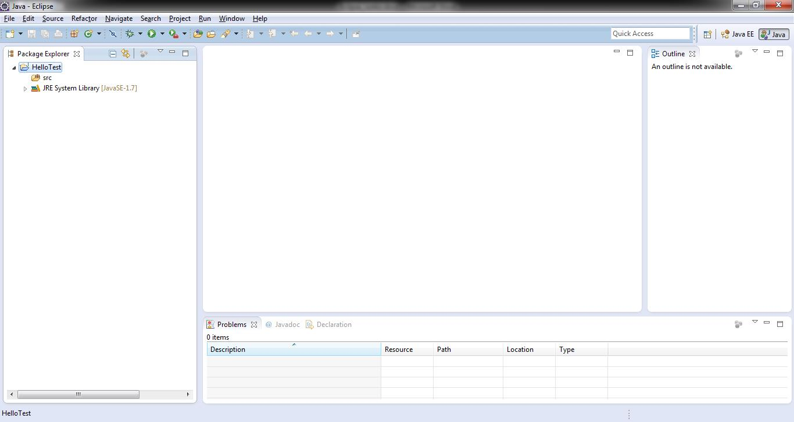
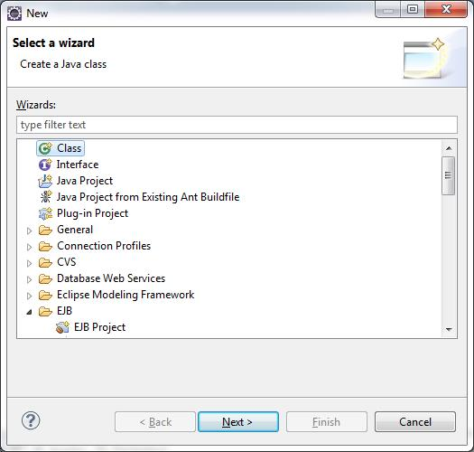
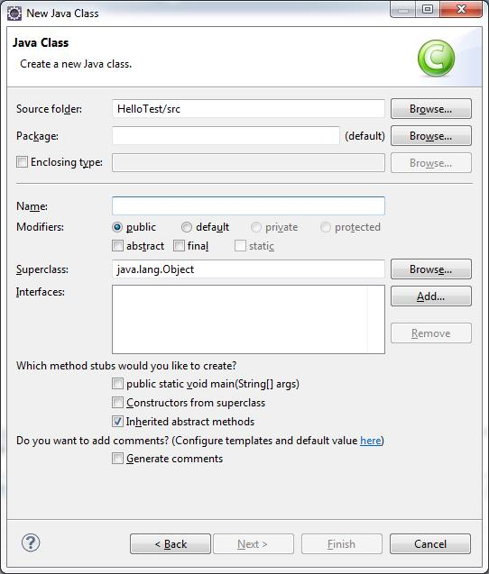

Projektin luonti

- Uuden Java-projektin luominen tapahtuu valitsemalla vasemmalta ylävalikosta File -> New -> Other

- Etsi listasta Java -> Java project
- Paina Next

- Tässä ikkunassa voidaan määrittää projektin nimi, käytettävä Javan versio ja muita projektin asetuksiin liittyviä asioita
- Yleensä riittää, että määritetään nimi
- Eclipse tallentaa projektit oletuksena valitsemaasi workspace-kansioon. Voit määrittää uuden sijainnin, esimerkiksi Dropboxiin
- Laitetaan nimeksi vaikka HelloTest ja painetaan Finish

- Open Associated Perspective pyytää lupaa avata Java-kielelle suunnitellun näkymän
- Painetaan Yes

- Luotu projekti tulee näkyviin vasemmalle
Luokan luonti
- Uuden Java-luokan (Class) luonti tapahtuu valitsemalla projekti, Package Explorer –välilehdestä, johon luokka halutaan ja painamalla vasemmasta ylänurkasta File -> New -> Class
- Vaihtoehtoisesti uuden luokan luonti tapahtuu helposti painamalla näppäinyhdistelmää CTRL + N. Tämän jälkeen valitaan Class

- Ikkunan avauduttua valitse Class ja paina Next

- Luontivaiheessa luokkaan voidaan samalla lisätä tarvittavia rajapintoja, tehdä abstrakti tai final luokka ja luoda vaivatta Main-metodi
- Luomiseksi riittää nimen syöttäminen
- Painetaan Finish ja luokka luodaan